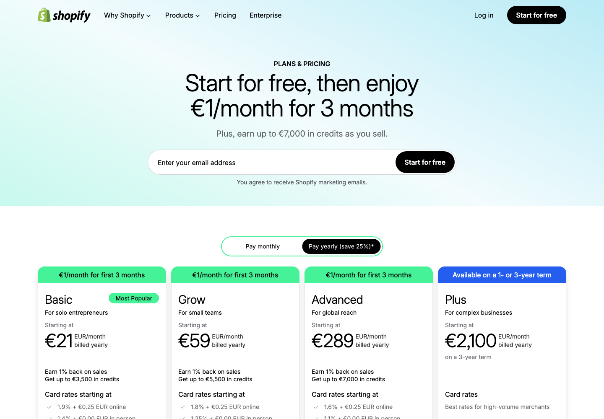

Pricing Page Visual

Shopify's public pricing page shows subscription plans beside card rates, third-party payment provider rates, and Plus entry points.
The mechanism to notice is not the plan ladder alone. The bill keeps changing after access is purchased because commerce activity and payment configuration create additional economics.
Screenshot captured: 2026-05-02 · Source reviewed: 2026-05-02
Core Insight
Shopify pricing is best read as access plus transaction infrastructure.
Pricing Logic Deconstruction
The bill changes when more merchant commerce flow runs through Shopify infrastructure.
Orders, GMV, payment setup, and provider choice make billing points material.
Plan thresholds and transaction economics work together.
Plan scope, provider setup, or Plus needs change the payment state.
Subscription buys access; commerce flow drives total platform cost.
Strategic Logic
Hypothesized pricing-relevant causal logic. Not proof.
Pricing Mechanism Logic
Primary component: value_extraction_map
Bill Examples
Illustrative customer bill scenarios showing how commerce flow and payment configuration change total platform cost.
| Scenario | Base layer | Variable layer | Final bill logic | Pricing lesson |
|---|---|---|---|---|
| Small store using Shopify Payments | Selected Shopify subscription plan | Shopify Payments processing costs | Subscription + Shopify Payments processing | Subscription buys access; live payment activity shapes total cost. |
| Growing merchant using third-party provider | Selected Shopify subscription plan | External provider costs + applicable Shopify third-party transaction fees | Subscription + provider costs + applicable third-party transaction fees | Provider choice changes the cost structure. |
| Complex merchant evaluating Plus | Plus starting commitment or enterprise contract | Variable platform economics and payment-related costs where applicable | Plus commitment or negotiated platform economics + payment costs | Enterprise pricing shifts from access to platform commitment. |
Pricing Architecture
Public pricing structure shown at review date: 2026-05-02.
Plan access levels and published pricing parameters vary by region and billing cycle.
Merchants face different cost salience depending on commerce scale, payment setup, and enterprise complexity.
Multiple billing points become material as commerce activity runs deeper through Shopify infrastructure.
Merchants move into different pricing states when activity, provider needs, plan scope, or enterprise requirements change.
Boundary Crossing Map
Where the merchant crosses into a different pricing state.
Decision Tension Layer
Platform monetization tension.
As more commerce flows through Shopify, value capture increases; the risk is that transaction-linked economics shift from infrastructure value to perceived rent on merchant success.
Decision Alternatives
Concrete pricing moves, trade offs, and leading indicators.
Pricing move: Clarify how payments, provider choice, plan level, and commerce flow affect total cost.
Effect: Less bill surprise.
Trade off: Fees become salient earlier.
Signal: Fewer fee-related support contacts.
Pricing move: Show when scale makes payment economics and provider choice material.
Effect: Better total-economics understanding.
Trade off: Earlier awareness of variable cost exposure.
Signal: Higher plan-fit accuracy and payment setup completion.
Pricing move: Explain when standard-plan economics shift to Plus commitment logic.
Effect: Less enterprise pricing uncertainty.
Trade off: Complexity appears earlier.
Signal: Higher Plus sales-qualified conversion.
Decision Priority
Which pricing move should be tested first, and why.
| Rank | Move | Why this priority | Risk | Complexity | Success metric |
|---|---|---|---|---|---|
| 1 | Transaction-cost visibility layer | Lowest-risk test; addresses bill surprise without changing architecture. | low | low | Lower fee-related support contacts and higher comprehension. |
| 2 | GMV-triggered payment economics guidance | Helps growing merchants shift from plan-price thinking to total-economics thinking. | medium | medium | Higher plan-fit accuracy and payment setup completion. |
| 3 | Plus migration economics layer | Reduces pricing uncertainty before enterprise sales conversations. | medium | medium | Higher Plus sales-qualified conversion and fewer pricing stalls. |
Reasoning Error Check
Stress test the pricing logic before accepting the recommendation.
Class prompt: Which risk would you test first, and what evidence would reduce uncertainty most?
| Reasoning risk | Case-specific check | Evidence needed | Failure signal |
|---|---|---|---|
| Causal overclaim | Do merchants accept layered economics for Shopify's operational value, or because alternatives are limited? | Willingness-to-pay research, churn reasons, win-loss notes, billing complaints by payment setup. | Growing merchants cite transaction economics as a downgrade, churn, or migration reason. |
| Value price confusion | Which charges feel like payment infrastructure value, and which feel like rent on GMV? | Merchant interviews comparing subscription fees, payment processing costs, and third-party fees. | Merchants describe third-party transaction fees as unrelated to Shopify value received. |
| Missing boundary conditions | Where do region, Shopify Payments eligibility, store rules, plan, and enterprise terms change billing? | Region pricing validation and merchant billing cohorts by payment setup and plan. | Merchants encounter fees or waivers that contradict the simplified model. |
| No trade off | Does fee visibility improve trust without depressing signup, payment adoption, or upgrades? | Controlled pricing-page and billing-explanation tests measuring comprehension, conversion, and support contacts. | Transparency improves comprehension but reduces conversion or Shopify Payments adoption. |
References
- Shopify. (n.d.). Plans & pricing. Retrieved May 2, 2026, from https://www.shopify.com/pricing
- Shopify Help Center. (n.d.). Pricing plans and billing overview. Retrieved May 2, 2026, from https://help.shopify.com/en/manual/intro-to-shopify/pricing-plans/pricing-overview
- Shopify Help Center. (n.d.). Third-party transaction fees on your Shopify bills. Retrieved May 2, 2026, from https://help.shopify.com/en/manual/your-account/manage-billing/billing-charges/types-of-charges/third-party-charges/third-party-transaction-fees
- Shopify Help Center. (n.d.). Shopify Payments. Retrieved May 2, 2026, from https://help.shopify.com/en/manual/payments/shopify-payments
- Shopify Help Center. (n.d.). Shopify Plus plan. Retrieved May 2, 2026, from https://help.shopify.com/en/manual/intro-to-shopify/pricing-plans/plans-features/shopify-plus-plan